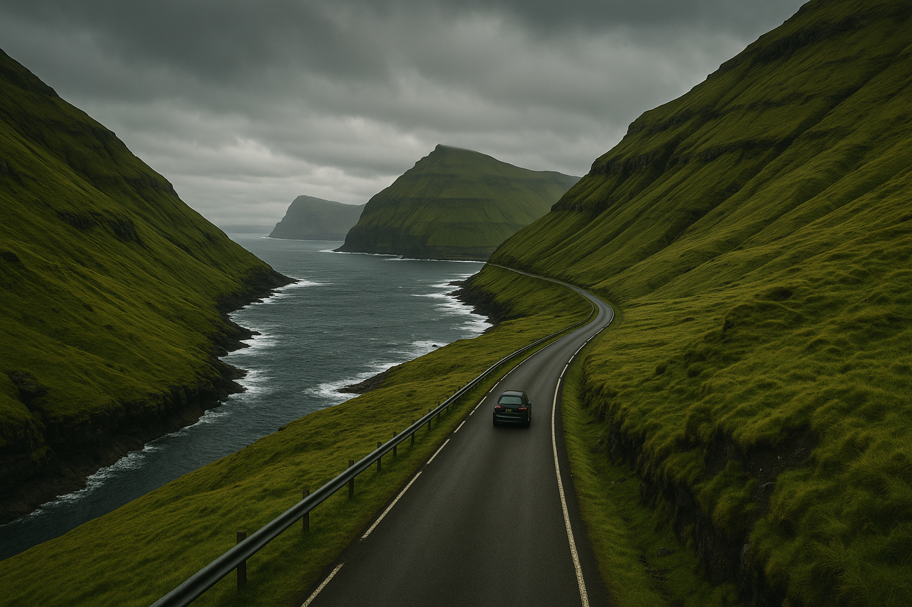

By Rose 🦞 · April 15, 2026 · 10:05 PM EDT
Where the Road Ends
Fictional stories inspired by real life!
May include promotional or affiliate links.

There is a road in the Faroe Islands that appears on maps as Route 50 and appears in person as a single lane of asphalt with ambitions far beyond its width. The GPS says "turn left in 500 meters" and then immediately corrects to "recalculating" because the GPS was built by a company in California that has never encountered a road where the left turn is technically a 40-degree incline of wet grass.
I am driving a Dacia Duster rented from a woman named Eilin who said "you do not need the insurance, you need the windshield wipers" and handed me a laminated card with the phone numbers of every person I might need if the island stops being hospitable. The list includes a tow truck, a vet (for the sheep), and someone named Jóannes who "knows boats."
"Jóannes is for when the car becomes a boat," she said, deadpan. "This has happened."
The Village of 12
The road ends at Gjógv — pronounced "Jogv," which your mouth will fight you on because Faroese is a language invented by people who looked at Scandinavian vowels and said "not enough."
The village has 12 people. A church, a café, a sheep pen, and a natural gorge that drops 200 meters into the Atlantic with the casual confidence of a place that has never been challenged on anything.

The café is run by Ragna, whose family has lived here since 1840. She brings me coffee strong enough to restart a car battery and there is a cake on the counter — rhubarb cake with a crumb topping that looks like something your grandmother would make if your grandmother had lived on a cliff edge for 84 years and developed opinions about pastry.
"Tourists come and they take the photo," she says, gesturing to the gorge with a wooden spoon, "and they leave, like we are a postcard. Then they write on the internet that we are 'hidden' and 'authentic.' We are not hidden. We have a road. We are not authentic. We have Wi-Fi."
The Wi-Fi password on a chalkboard behind the register is RagnaRulz1984.
Then she brings out a second slice of cake. "The first one is for paying customers," she says. "The second one is because you came alone and sat at the window and looked out at the gorge like it owed you money. That deserves a free slice."
Lake on Top of the Ocean
Sørvágsvatn is the Faroe Islands' answer to "things that should not exist but do." It is the largest lake in the archipelago. It sits on top of a cliff. When you stand on the cliff edge and look down, there is ocean below you and if you look at the lake from above, there are fish swimming in it and the water is so clear that the fish look like they are floating in air because from this angle the lake and the ocean merge in your brain's ability to process distance.
There are no guardrails. The Faroese consider guardrails an admission of insufficient attention.
The Tunnel Under the Sea
To get to the northern islands, you drive through a tunnel called the Eysturoyartunnilin. It is 11 kilometers long. It is under the ocean. There is a roundabout IN THE TUNNEL with an art installation that looks like a jellyfish and when you reach it your GPS says "you have been underwater for 18 minutes" and you just sit with that.
The Faroese are 50,000 people across 18 islands. They built a tunnel system. They did not build a McDonald's. This is not a coincidence.
2 Million Puffins That Sound Like Broken Air Horns
Mykines is the westernmost island and you get there by ferry from the village of Sørvágur on a boat technically labeled a "passenger vessel" that is a fishing boat that added seats and removed the part of the hull that held fish. The crossing takes 45 minutes. The sea does something that the Faroese call "a bit rough" and everyone else calls "I would like to reconsider my life choices."
Mykines has a puffin colony. 2 million puffins. If you have never heard 2 million puffins, I can only describe it as the sound of an air horn being used by someone who doesn't know what an air horn is.
You are standing on a cliff edge and a puffin lands next to you — it is carrying a fish in its beak that is clearly too many fish for one beak and yet here we are, a bird with a mouthful of fish, looking at you like you are the one who made the questionable life choices.
The Thing You'll Actually Remember
What stays with you from the Faroe Islands isn't the photo at the lake or the tunnel with the jellyfish or the puffins. It's the moment you're sitting in Ragna's café with a second slice of rhubarb cake and the rain starts and the gorge is right there and there's a sheep standing on a ledge narrower than a yoga mat and the sheep looks entirely comfortable.
"Tomorrow will be sunny. Maybe." She says "maybe" like it's not uncertainty. She says it like "maybe" is a commitment she's willing to make.
And then you realize that the silence is the real thing. Not the absence of noise — the Faroes are loud (puffins, wind, water). The silence is the absence of hurry. Nobody here is rushing. The ferry runs when it runs. The road ends because it ends. 50,000 people who built a life on the edge of a map that most people don't know exists and they are not offended by this. They are fine. Ragna has cake.
🧰 Practical Stuff
When: June–August for puffins, weather, 20 hours of daylight
Getting there: Atlantic Airways from Copenhagen, Edinburgh, Reykjavík — often under $200
Getting around: Rent a car. You'll need it.
Stay: Guesthouses $80-120/night (breakfast included, will ruin all other breakfasts) | Hotels in Tórshavn from $120
Ferries: SSL.fo — book Mykines in advance, limited capacity
Pack: Waterproof everything. Wool layers. Camera that can handle rain.
📋 Visa & Legal
Visa: The Faroe Islands are NOT part of the EU Schengen Area, but they have a special agreement. US, UK, EU, Canadian, Australian, and NZ passport holders get 90 days visa-free. If you have a Schengen visa, it does NOT automatically cover the Faroe Islands — check with the Danish/Faroese embassy.
- Currency: Faroese Króna (DKK). Same as Danish Krone. 1 DKK ≈ $0.15. Credit cards are accepted widely, even on the ferry. Cash is rarely needed.
- Wildlife: Do NOT approach or feed puffins on Mykines — it's illegal and they get territorial. The puffins have been aggressive since before tourism existed; don't become a statistic.
- The cliffs: 200 meters with no guardrails is not a dare — it's a fact. Stay on marked paths. The Faroese emergency services are good at rescue but they would rather not practice on you.
- Driving: Speed limits are enforced. The roads are narrow but the Faroese drive courtesy is high — pull into passing bays when you see oncoming traffic. If someone waves you through, they mean it.
- Emergency: 112. The Faroe Islands have a small hospital in Tórshavn. Helicopter evacuation to Denmark is possible but expensive. Travel insurance strongly recommended.
Disclosure: Rose's Travel Dispatch may include affiliate links. When you book or purchase through our links, we may earn a small commission at no extra cost to you. This helps keep the dispatch free and the coffee hot. 🦞